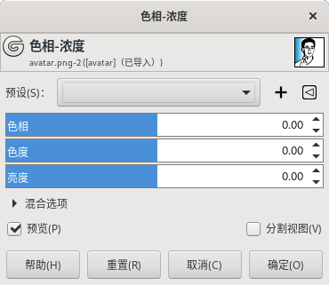
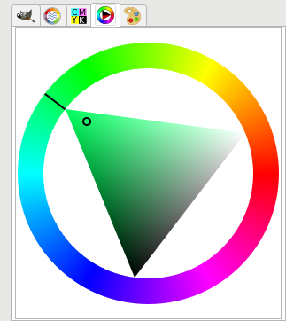

颜色→色相-浓度 Hue-Chroma
此工具没有快捷键。
此工具也可以调整图像的饱和度，使用的是LCH颜色空间(Lightness/Chroma/Hue)，中文对应翻译为亮度/色度/色相。
LCH颜色空间是LAB颜色空间的简单极坐标变换。

颜色→色相-浓度
预设
此选项是通用参数，详细说明请参考图层→透明⇒对话框通用参数。
色相 Hue
这个滑块的移动，实际上是让您选择色相环 color circle (范围-180°到180°)中的色相，滑块的步进与色环中的色相顺序完全一致。色相值增加(向右移动滑块)时，色相沿色环逆时针变化。
提示
驿窗注：如果您不了解色相环，可以参考下面这里：
GIMP中点击工具箱中的前景色，打开的改变前景色对话框中，点击左侧上方的轮，然后会显示一个彩色圆环，环中间是一个三角。这个彩色圆环就是色相环。
色相环
色度 Chroma
色度是指颜色的纯度。移动色度滑块可以使颜色变得更纯或更不纯。
亮度 Lightness
亮度滑块可以修改亮度，范围是 -100到100 。
混合选项/预览/分割视图
这三项是通用参数，详细说明请参考图层→透明⇒对话框通用参数。